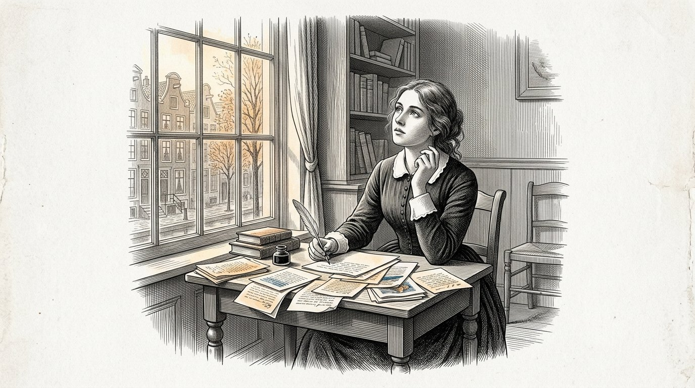
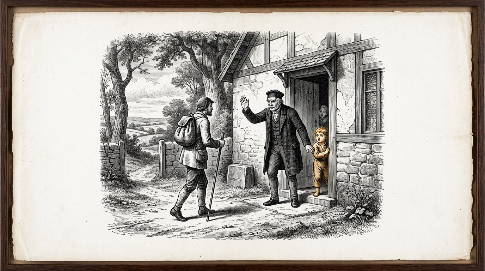
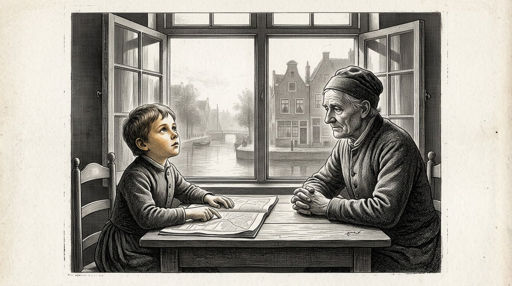
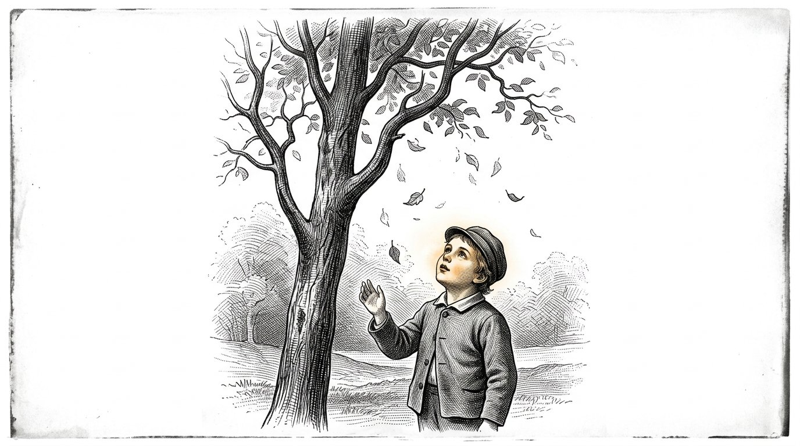
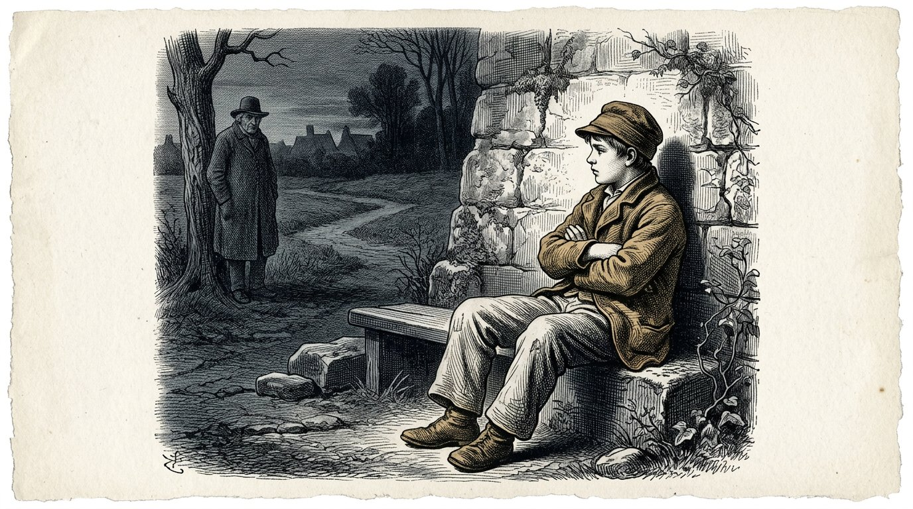
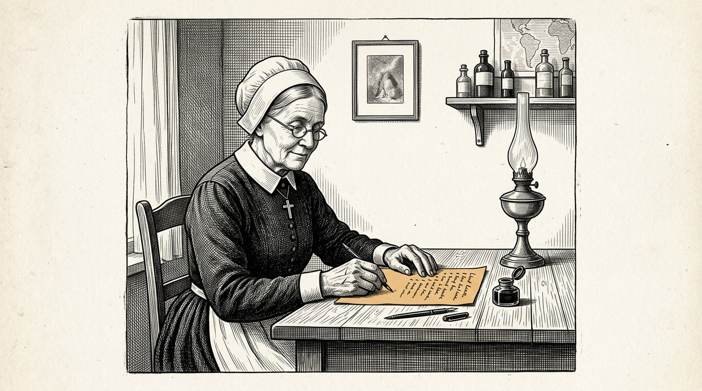
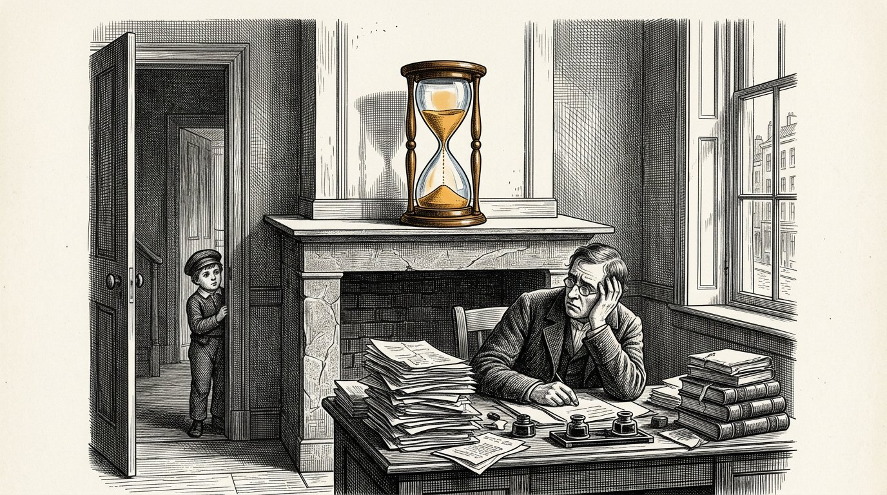
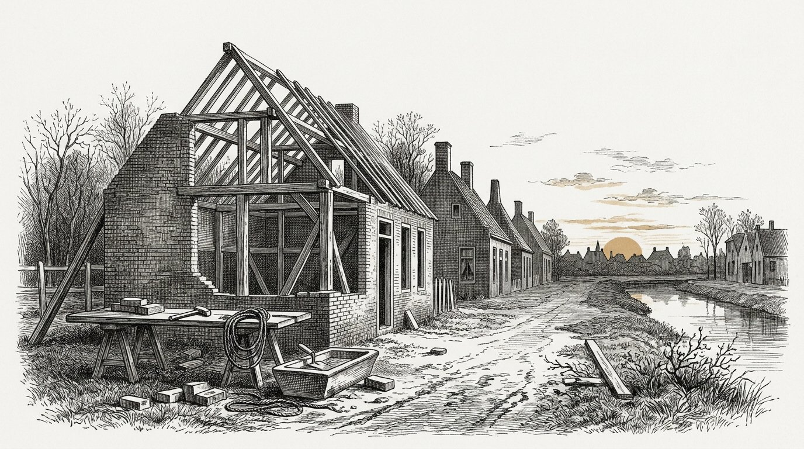
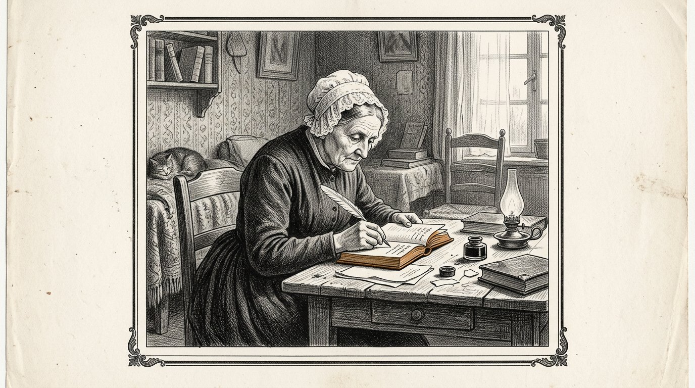

LIBRO TRE
Il Kosaris
Il libro di Anthea

LIBRO TRE
Il libro di Anthea
Questo è il terzo libro del Kosaris e non è stato iniziato da me.
Comincia con quattordici pagine che ho scritto quando avevo vent’anni, sulla mia nonna Demira e sul vecchio che veniva in panetteria il giovedì. Le ho messe in un cassetto e non le ho toccate per cinquantadue anni. Quando le ho ritrovate, le ho trovate troppo sicure. Non vi ho cambiato nulla. Vi ho aggiunto una frase sotto e la data.
Il primo libro riguarda le quattro colonne. Il secondo libro riguarda la distinzione tra ciò che è certo e ciò che è stato dato per assunto. Questo libro riguarda la domanda sottostante: come si cresce un essere umano affinché sia in grado di sostenerlo.
L’essere umano non è un’entità unitaria. È una stratificazione di livelli, nell’ordine in cui si sono formati, e ogni livello può formarsi solo quando quello sottostante si è solidificato. Questo libro segue quell’ordine e non tralascia nulla.
Sette giorni. Tanto ci vuole prima che l’ovulo sappia che prosegue. In quei giorni non entra nulla. Si dà forma soltanto.
Sette mesi. Il rettile. Il bambino vive in due dimensioni. Non è una metafora: un pesce e una lucertola hanno gli occhi ai lati e vedono tutto intorno, ma i loro due occhi non lavorano insieme e non c’è profondità. Piatto e tutto insieme. In quei mesi il bambino impara a governare autonomamente le proprie funzioni vitali: respirare, mantenersi caldo, evitare il pericolo. Nessun legame, nessuna empatia, nessun riconoscimento di sé — ma intatto e affidabile al proprio livello. Dopo sette mesi quello strato è completo, eppure un bambino nasce di solito soltanto verso il nono mese. In quei due mesi non si aggiunge nulla di nuovo. Lo strato si consolida. Uno strato non è pronto quando funziona; è pronto quando resiste.
Sette anni. Il mammifero. Gli occhi si spostano in avanti, le due immagini cominciano a collaborare e da ciò nasce la profondità — la terza dimensione. E con la profondità arriva il sentimento. Non si rapprende come regola né come conoscenza, ma come ovvietà vissuta, e si rapprende soltanto in un unico essere umano presente che rimane lì per anni. Ciò che qui non si rapprende, in seguito non si rapprenderà più da nessuna parte.
Ciò che ancora non appartiene a quei sette anni è il tempo. Un mammifero ha riflessi temporali — un ritmo che ritorna, la fame a un’ora fissa, un cane che sta davanti alla porta al momento giusto — ma non sa pianificare. Non può sapere che domani sarà diverso. Perciò quei sette anni devono trascorrere senza consapevolezza del tempo: niente orologio, niente calendario, niente tra poco, nessun obiettivo fra cinque anni. Ciò che in quegli anni deve essere costruito è una base riflessa senza tempo, e questa si crea soltanto se teniamo il tempo al di fuori.
Poi l’essere umano. Solo a questo punto entra in gioco la quarta dimensione: il tempo. Il bambino può pensare in anticipo a un giorno che ancora non esiste e fare già qualcosa per esso. Da quel momento può entrarvi tutto ciò che per sette anni abbiamo tenuto fuori, e vi entra facilmente, perché c’è qualcosa su cui poggiarlo. Sentimento e intelletto procedono allora fianco a fianco, fino ai quattordici e fino ai ventuno anni. A quattordici anni si apre la capacità di osservare il proprio pensiero. A ventuno l’intelletto può prendere il sopravvento — ma solo nella misura in cui sotto di esso vi sia una base emotiva sufficiente a sostenerlo.
Ma un essere umano ha più di quattro direzioni. Ce ne sono sette: le tre dello spazio, il tempo, e poi ancora la grandezza, il valore e il numero. La grandezza è sapere quanto è grande qualcosa, e non soltanto saper calcolare quanto è grande. Il valore è ciò che qualcosa vale, indipendentemente dal fatto che qualcuno lo misuri. Il numero è saper sentire che un solo caso non è ancora nulla e che mille casi sono qualcosa.
Le ultime tre non vengono sviluppate nella nostra istruzione. Vengono rimosse. Una scuola riconduce ogni cosa a un’unica misura, chiama valore ciò che trova posto nella pagella, e insegna a fare i conti con i numeri senza mai associarvi un sentimento. Un bambino ne esce con quattro direzioni e pensa che sia tutto.
Quell’ultima condizione è la ragione per cui esiste questo libro. Una mente priva di un fondamento emotivo sottostante non prende il sopravvento. Si adegua a chi le ha parlato per ultimo.
Oggi la seconda linea arriva molto più tardi nella vita, e per molti non arriva affatto. Non perché si impari meno. È perché si sono riempiti di apprendimento gli anni in cui una persona dovrebbe poter sbagliare, e perché manca la base affettiva su cui quei passi falsi possano poggiare. Chi ha commesso troppo pochi errori non ha nulla in base a cui giudicare.
Settantasette. Non è un’età in cui una persona impari qualcosa. È il tempo che trascorre prima che ciò che una persona ha imparato ritorni in qualcuno che non l’ha conosciuta.
Sono stata infermiera per quarantasei anni. Ho visto nascere centodiciannove bambini e non ne ho cresciuto nemmeno uno. È una lacuna di questo libro e preferisco dirlo prima che qualcuno lo scopra dopo.
Dove non so qualcosa, è indicato.
Parte 1

Nel quale è riportato ciò che Anthea annotò a vent’anni su sua nonna e sul vecchio, e ciò che vi scrisse sotto cinquantadue anni dopo.

Io vedevo colori intorno alle persone. Non l'ho detto a nessuno per molto tempo, perché mia madre se ne preoccupava, mentre mia nonna no, ed era più facile stare con mia nonna.
Non so che cosa fosse. In seguito ho studiato la materia, e non ho mai trovato un nome che le rendesse giustizia. I medici hanno dei nomi per definirla, ma quei nomi non la esauriscono.
Quello che so, però, è quando se n’è andato. Se n’è andato quando avevo quattordici anni, nell’inverno in cui è morto mio nonno, e non è mai tornato.
Ho sofferto per questo per trent’anni.
Ora sono vecchio e ora la penso diversamente. Non penso più di aver perso qualcosa. Penso che si sia aggiunto qualcosa.
Si aggiunse qualcosa che osservava ciò che vedevo e chiedeva se fosse vero.
Quella cosa non se n’è mai più andata. È ancora qui, e in questo momento sta guardando questa frase e mi chiede se lo so davvero.
Non ne sono certo.
Ma in cinquant’anni ho visto accadere la stessa cosa a quindici bambini, più o meno alla stessa età, e questa non è una prova, ma non è neppure nulla.
Anthea scrive:Si aggiunge qualcosa che osserva. Non è la fine del bambino. È il secondo strato che si apre.

Mianonna pesava ogni sacco di farina. L’ho vista farlo cinquemila volte e non ho mai guardato quel gesto come si guarda qualcosa di straordinario, perché è così quando si è piccoli.
Pensavo che pesare facesse parte della cottura.
Non mi ha mai spiegato perché l’avesse fatto. Non mi ha mai detto che fosse importante o che dovessi ricordarlo.
Lei pesava e io stavo lì accanto.
Quando avevo diciassette anni e cominciai a lavorare in clinica, il primo giorno contai le boccette nell’armadietto, e l’infermiera mi chiese perché lo facessi, e io dissi che non lo sapevo.
Non lo sapevo.
Solo molto più tardi mi sono accorto di averlo preso in panetteria.
Ciò che ho imparato da tutto questo è la cosa più spiacevole dell’intero libro: la cosa più importante che mia nonna mi ha insegnato, non me l’ha mai insegnata.
L’ha fatto davanti a me.
Tutto ciò che mi aveva spiegato, a parole, con l’intento che lo ricordassi, l’ho dimenticato.
Anthea scrive:Un bambino non assimila ciò che dite. Assimila ciò che fate mentre dite qualcos’altro.

Il vecchio veniva in panetteria il giovedì e io ci andavo spesso, perché mi piaceva starci.
Chiedeva sempre la stessa cosa, e ogni volta in modo diverso.
Non chiese mai che cosa sapessi. Chiese come lo sapessi.
Quando avevo otto anni, lo trovavo fastidioso, perché volevo raccontare ciò che sapevo e ne sapevo molto.
Quando avevo undici anni, cominciai a pensarci in anticipo. Pensavo a che cosa avrei risposto se me l’avesse chiesto, e così cominciai a guardare in modo diverso ciò che vedevo.
È quello che fece. Non mi ha mai insegnato nulla. Per tre anni mi ha fatto la stessa domanda, finché non cominciai a farmela da me prima che entrasse.
E allora smise.
Gliel’ho chiesto in seguito, quando avevo diciannove anni. Gli chiesi perché avesse smesso.
Disse: "Perché ora ce l’hai tu stesso."
Allora ho detto che avrebbe potuto dirlo. Ci avrebbe fatto risparmiare molto tempo.
Disse che non era vero, e aveva ragione, e mi ci vollero altri vent’anni per capire perché.
A una domanda che ti viene posta, puoi rispondere.
Una domanda che ti poni da solo, non puoi più accantonarla.
Anthea scrive:Non insegnare al bambino la risposta. Poni la domanda così spesso che il bambino la faccia propria.
Parte II
Parte 2

In cui non entra nulla e si predispone soltanto la forma nella quale più tardi potrà entrare qualcosa.

Passano sette giorni prima che un ovulo fecondato si annidi.
Sette giorni durante i quali è in viaggio e durante i quali, per quanto ci è dato vedere, non accade nulla che valga la pena di essere menzionato.
Non si aggiunge nulla. Nulla viene nutrito. Non c’è alcun legame con la madre e la madre non sa nulla.
Si dà forma soltanto.
Non l’ho mai visto con i miei occhi e non lo vedrò mai. Lo so dai libri e lo dico, perché in questo libro è riportato inoltre quasi tutto ciò che ho osservato personalmente.
Eppure lo metto per iscritto, e precisamente per questa ragione.
In clinica ho visto cento volte che le persone diventano impazienti durante una fase in cui non accade nulla. Vogliono che entri qualcosa. Vogliono nutrire, parlare, imparare, toccare.
E la prima settimana di una persona è una settimana in cui non entra nulla e in cui l’unico lavoro consiste nel predisporre la forma in cui più tardi potrà entrare qualcosa.
Chi in quella settimana vuole già dare qualcosa, lo dà a qualcosa che ancora non esiste.
Così è all’inizio e così è in ogni fase successiva.
Anthea scrive:Prima che la vita possa cominciare, la forma deve esistere. In quella settimana non accade nulla, e quel nulla è il lavoro.

C'erano due case nella stessa strada, in cui nello stesso anno si attendeva un bambino.
In una casa fu preparato ogni cosa. Arrivarono una culla, della stoffa e delle coperte, e tutto giaceva stirato in un armadio.
Nell’altra casa accadde tutto questo, e inoltre avvenne qualcosa che nessuno notò.
La donna laggiù aveva preso a mangiare a orari fissi. Andava a letto quando faceva buio e si alzava quando faceva giorno, e lo faceva già da quattro mesi prima che arrivasse il bambino.
Non lo fece per il bambino. Lo fece perché dormiva male e perché qualcuno le aveva detto che aiutava.
Ho seguito quei due bambini fino al loro secondo anno.
Il secondo figlio dormiva. Il primo no.
Non so se dipendesse da quello. C’erano altre dieci differenze tra quelle due case e non ne ho misurata nemmeno una.
Ma da allora ho detto la stessa cosa a ogni donna che volesse ascoltarla, e lo dico anche qui:
Il ritmo di una casa deve esserci prima che arrivi il bambino.
Un orologio che comincia a ticchettare solo quando c’è qualcosa da misurare non è un orologio. È una reazione.
Anthea scrive:Imposta il ritmo prima che arrivi il bambino. Un orologio che comincia a ticchettare solo quando c’è qualcosa da misurare, non è un orologio.

In ogni casa c’è qualcuno che decide che cosa entra.
Di solito non è nessuno in particolare e non viene mai concordato. È l’uomo che dice: qui non si fa, oppure: lasciatelo entrare, oppure: quell’uomo non entra.
Ho visto cosa succede quando quello non è nessuno.
C’era una famiglia dove tutti erano i benvenuti e dove entrava di tutto. Venivano i vicini, venivano le storie, arrivò una radio e più tardi comparve di tutto su uno schermo, e non c’era mai nessuno che dicesse che qualcosa non sarebbe entrato.
Fu lodato. Lo si definì una casa aperta.
I bambini di laggiù sono cresciuti con tutto.
Ciò che non hanno avuto è stata una sola persona che, di tanto in tanto, fermasse qualcosa.
Non si tratta del fatto che venga trattenuto molto. In quella casa, quasi nulla era realmente dannoso.
Si tratta del fatto che un bambino viva l’esperienza di trovare qualcuno alla porta.
Chi non l’ha mai vissuto, non ne costruisce a sua volta alcuno.
A trent’anni è aperto a tutto ciò che gli capita, e lui la chiama apertura mentale, e non l’ha mai scelta.
Anthea scrive:Deve esserci qualcuno alla porta prima che qualcosa arrivi alla porta. Un bambino che non l’abbia mai visto non costruisce da sé una porta.
Parte III
Parte 3

In cui si osserva in piano e tutt’intorno, e si predispongono le funzioni vitali — respirare, restare al caldo, evitare il pericolo — e in cui si rivela che uno strato è compiuto soltanto quando regge.

Guarda un pesce.
I suoi occhi sono ai lati della testa. Vede a sinistra e vede a destra, e vede più o meno tutto ciò che lo circonda nello stesso momento. Non c’è quasi punto da cui ci si possa avvicinare a lui senza che se ne accorga.
Sembra migliore di ciò che abbiamo noi, e sotto un certo aspetto lo è davvero.
Ma lui lo vede piatto.
I suoi due occhi non lavorano insieme. Ciascuno guarda per conto proprio, e dentro di lui non c’è nulla che sovrapponga le due immagini. Perciò non sa quanto disti qualcosa. Sa che c’è qualcosa, e più o meno dove si trova, e nulla di più.
Una lucertola fa lo stesso.
È ciò che in questo libro chiamo le due dimensioni. Non un’idea — un modo di guardare. Tutto intorno, piatto, tutto insieme, nessuna profondità.
Per ciò che quegli animali devono fare, è sufficiente. Fuggire non ha bisogno di profondità. Fuggire ha solo bisogno che tu sappia che c’è qualcosa.
Un bambino nel grembo materno non ha bisogno neppure di quella profondità, perché non c’è nulla di lontano.
Tutto ciò che esiste lo tocca.
Anthea scrive:Due dimensioni non sono un’idea, ma un modo di guardare: tutt’intorno, piatto, tutto insieme, senza profondità. Per i voli è sufficiente.

Un bambino si esercita a respirare mesi prima che ci sia aria.
Imprime il movimento nel liquido in cui si trova. Non assorbe nulla, perché non c’è nulla da assorbire. Imprime soltanto il movimento, migliaia di volte, senza che conduca a nulla.
L’ho sentito con la mia mano in una donna al settimo mese. Una serie di brevi colpi, quattro o cinque di fila, e poi silenzio.
Pensava che fosse il singhiozzo e lo è, più o meno, e al tempo stesso è qualcos’altro.
È un essere che prova un’azione per la quale il mondo non esiste ancora.
Quando nasce, il bambino deve respirare entro pochi secondi. Non c’è tempo per imparare. Non esiste un primo tentativo.
Tutto ciò che dovrà accadere allora è già stato provato per sette mesi nel buio.
Un rettile vive in due direzioni. Avanza e procede di lato, e rimane aderente alla superficie su cui giace. Non si arrampica né salta e non ha alcuna nozione di ciò che sta sopra.
Così sta anche un bambino in quei mesi. Si gira e si sposta, ma non c’è né sopra né sotto, perché galleggia.
Questo è il motivo per cui, in questo libro, chiamo il rettile il primo strato e non quello più basso.
In ogni essere umano c’è una parte che si mette in ordine da sé, senza che vi sia nessuno e senza che si possa imparare nulla da un altro.
Quella parte non ha bisogno né d’amore né di parole né d’incoraggiamento.
Ha bisogno di quiete e ha bisogno di tempo, ed è l’unica parte di un essere umano che è compiuta prima di nascere.
Anthea scrive:Il primo strato prova nel buio un atto per il quale il mondo ancora non esiste. Quello strato non ha bisogno d’amore. Ha bisogno di quiete.

Un bambino nel grembo ha sempre la stessa temperatura.
Non provvede da sé. Riceve il calore della madre e non deve fare nulla per ottenerlo, e così è per sette mesi.
E poi nasce, e nel giro di un’ora deve cominciare a farlo da solo.
È il passaggio più arduo della vita umana e dura circa un giorno.
Ho visto bambini che sapevano farlo subito e bambini che non ci riuscivano, e la differenza non sta nell’amore che avevano ricevuto.
È il motivo per cui accostiamo un neonato a sua madre e non lo mettiamo in una culla. Non per tenerezza. Perché un corpo tiene caldo a un corpo mentre quel corpo impara a farlo da sé.
Ciò che ho imparato da questo non vale solo per il calore.
Ci sono cose che una persona riceve dapprima da un altro e che poi deve cominciare a creare da sé.
Se deve farli da sé troppo presto, va male. Se li riceve da qualcun altro troppo a lungo, non imparerà mai a farli.
Con il calore, è questione di ore e potremo vederlo.
In tutto ciò che viene dopo, ci vogliono anni e noi non lo vediamo.
Anthea scrive:Ciò che dapprima riceve da un altro, deve poi cominciare a farlo da sé. Troppo presto va male, troppo tardi non lo imparerà mai.

Si chiuse di colpo uno sportello nella clinica e una donna all’ultimo mese di gravidanza trasalì.
E sotto la sua mano anche il bambino ebbe un sussulto.
Lei lo sentì e mi guardò e disse: "Lui lo sentì."
Allora dissi che non aveva sentito come sentiamo noi, ed è questo che si dice, e ora non so più se fosse esatto.
Ciò che accadde in ogni caso fu questo: giunse uno stimolo intenso e ne seguì un ritrarsi, e tra l’uno e l’altro non vi fu nulla.
Nessun pensiero. Nessuna ponderazione. Nessuna domanda se fosse pericoloso.
Questa è la terza funzione vitale ed è la più importante delle tre, perché respirare e mantenersi al caldo tengono in vita un essere, mentre evitare i pericoli lo mantiene integro.
Nella mia vita ho conosciuto tre persone nelle quali quel riflesso non funzionava bene.
Non erano coraggiosi. Il coraggio è un’altra cosa; avere coraggio significa avere paura e andare lo stesso. Non avevano paura.
Tutti e tre sono morti giovani e di nessuno di loro posso dire che sia stato per quella sola cosa.
Ma lo scrivo perché oggi ci impegniamo molto per non spaventare i bambini.
Lo spavento non è un danno.
Lo spavento è lo strato più antico che esista, ed era lì prima di ogni altra cosa.
Anthea scrive:Evitare il pericolo non è paura né debolezza. È lo strato più antico, ed era lì prima che esistesse qualsiasi altra cosa.

Dopo sette mesi, il rettile è finito.
Tutto ciò di cui un corpo ha bisogno per governarsi da sé è allora presente. Respirare, il calore, lo spavento. Un bambino nato al settimo mese può continuare a vivere, e non è un miracolo, ma il normale esito di uno strato giunto a compimento.
Eppure un bambino nasce di solito solo due mesi dopo.
Mi sono a lungo interrogato al riguardo, e non ne sono venuto a capo.
Ciò che ho visto è questo. In quei due mesi non si aggiunge nulla di nuovo. Non si forma alcuna nuova funzione. Il bambino aumenta di peso, la sua pelle si ispessisce e i suoi polmoni si fanno più ampi, e questo è quasi tutto.
Lo strato è completo e si fa solido.
Ho visto nei bambini nati troppo presto quale sia la differenza. Potevano fare tutto. Potevano farlo per meno tempo.
Questa è la forma in cui ho cominciato a comprenderlo, e preciso subito che sono parole mie e non di un medico:
uno strato non è pronto quando funziona. È pronto quando regge.
Chi conclude una fase nel momento in cui vede che funziona, la conclude con due mesi d’anticipo.
Anthea scrive:Uno strato non è pronto quando funziona. È pronto quando regge.
Parte IV
Parte 4

In cui la terza direzione entra in gioco e il sentimento si consolida, non come regola ma come ovvietà vissuta — e in cui la quarta direzione viene tenuta lontana ancora per sette anni.

Viene un giorno in cui un bambino si tira su.
Giaceva, stava seduto, scivolava sul pavimento — poi afferra il bordo di una sedia e si solleva, e sta in piedi, e cade.
Ciò che si aggiunge quel giorno è la terza direzione.
Cominciò prima, e cominciò negli occhi.
Un mammifero ha gli occhi rivolti in avanti. Vede meno del pesce — c’è un intero mondo dietro di lui che non vede e per il quale deve voltarsi.
Ciò che ne ricava è che i suoi due occhi vedono la stessa cosa da due punti diversi, e che in lui c’è qualcosa che sovrappone quelle due immagini.
Da ciò nasce profondità.
Da quell’istante non c’è soltanto il fatto che qualcosa esista, ma anche quanto lontano si trovi. C’è l’afferrare. C’è il troppo lontano. C’è il quasi.
Un neonato ancora non ce l’ha. Ci vogliono mesi prima che i suoi occhi imparino a lavorare insieme, e questo avviene da sé senza che nessuno se ne accorga.
Finché un bambino è a terra, vive come viveva il rettile: in avanti e di lato. Non c’è un sopra cui possa arrivare da solo.
Da quando sta in piedi, c’è altezza. C’è qualcosa che è troppo lontano da afferrare. C’è un tavolo su cui giace qualcosa. C’è il cadere.
E con ciò si aggiunge qualcos’altro che comincia nello stesso istante e che nessuno mette in relazione con la terza direzione.
Il bambino si volta.
Si solleva, si mette in piedi, poi gira la testa per vedere se qualcuno l’ha visto.
L’ho visto in moltissimi bambini, ed è sempre nella stessa settimana in cui stanno in piedi.
Il mammifero non si stacca dallo spazio. Viene insieme allo spazio.
Chi raggiunge l’altezza può cadere. Chi può cadere ha bisogno di qualcuno che guardi.
Anthea scrive:Con la terza direzione arriva il mammifero. Chi ha altezza può cadere, e chi può cadere si guarda intorno per vedere se qualcuno lo sta osservando.

Io ho visto nascere centodiciannove bambini in quarantasei anni.
Un neonato fa quattro cose nella prima settimana. Respira, beve, dorme e urla.
È tutto. Sembra poco, ed è quasi tutto ciò che viene fissato nel corso di una vita umana.
Perché ciò che accade in quella settimana non è che il bambino impari qualcosa. È che il corpo constata in quale mondo si è venuto a trovare.
Si viene quando grido, oppure no.
Non c’è altro. È una sola domanda, e la risposta non viene dalle parole, ma dalla rapidità con cui arriva qualcuno.
Ho visto bambini presso i quali veniva sempre qualcuno, bambini presso i quali veniva quasi sempre qualcuno e bambini presso i quali la cosa variava.
Il cambiamento è la cosa peggiore. Non lo so per averlo letto in un libro, lo so per aver osservato, e aggiungo subito che non l’ho misurato e quindi non lo so con certezza.
Ma l’ho visto troppo spesso per non metterlo per iscritto.
Un bambino sopporta poco. Un bambino non sopporta l’imprevedibile.
Anthea scrive:Nella prima settimana un essere umano non impara nulla. Nella prima settimana si stabilisce se il mondo risponde.

C'era un bambino che aveva cinque persone che si prendevano cura di lui. Non era per indifferenza. La madre lavorava, il padre lavorava, e c'erano due nonne e una vicina, e tutti lo facevano volentieri.
Il bambino stava bene. Non veniva mai lasciato solo, non gli mancava nulla, e ce n’era sempre uno che veniva.
Ho seguito quel bambino perché era venuto da noi in clinica per un problema all’orecchio.
Quello che mi colpì, mi colpì solo dopo un anno.
Quando il bambino si agitava, la madre diceva: sei stanco. Una nonna diceva: hai fame. L’altra diceva: sei irrequieto. La vicina diceva: vuoi uscire.
Tutti e cinque amavano, e tutti e cinque a volte avevano ragione.
Ma il bambino ricevette cinque nomi per un’unica sensazione nel corpo.
Un bambino non sa istintivamente che cosa sia la fame. Avverte qualcosa di spiacevole. Impara che cos’è soltanto perché c’è qualcuno che, ogni volta che prova quella stessa sensazione, dice la stessa cosa.
Questo bambino non l’ha imparato. Ha cominciato a tirare a indovinare.
È diventato un bambino garbato e un bravo scolaro e non è mai stato curato per nulla.
A diciannove anni mi disse, nella stessa clinica, sulla stessa sedia: "Non so mai cosa provo."
Anthea scrive:Un bambino non impara che cos’è la fame dalla fame. Lo impara perché, ogni volta, la stessa persona pronuncia la stessa parola insieme alla fame.

Un bambino di cinque mesi non comprende una parola.
Legge un volto più rapidamente di quanto possiate crearlo.
L'ho controllato cento volte, perché all'inizio non ci credevo. Mi sedetti accanto a una madre e le feci dire qualcosa di gentile mentre pensava a qualcosa di spiacevole.
Il bambino lo sapeva. Ogni volta.
Non perché sia intelligente. Perché non ha nient’altro. Non ha parole, dunque ha soltanto il volto, e guarda quel volto come Lei guarda un bollettino meteorologico quando deve prendere il mare.
Perciò non serve mostrarsi allegri con un neonato quando non lo si è.
Quel che invece funziona, e questa è la cosa strana, è esserci semplicemente mentre lei non lo è.
Avevo avuto una madre che aveva perso suo marito quando il bambino aveva tre mesi. Non poteva essere allegra e non faceva più alcuno sforzo per sembrarlo.
Era sola. Ogni giorno, per ore, triste e presente.
Quel bambino si è sistemato.
Un bambino può sopportare un dolore che c’è. Un bambino non può sopportare un volto che dice qualcosa di diverso da ciò che prova, perché allora il mondo non torna, e non è ancora in grado di chiedere come mai.
Anthea scrive:Non faccia finta. Il bambino vi comprende prima ancora che possiate parlare.

Verràun giorno in cui un bambino vi guarderà, poi guarderà qualcos’altro e poi tornerà a guardarvi per vedere che cosa ne pensate.
Questa è una novità. Il mese prima non ne era capace.
Da quel momento in poi, il bambino non si occupa più soltanto di ciò che accade, ma di ciò che lei pensa di ciò che accade.
È questo l’inizio di tutto ciò che più tardi verrà chiamato sentimento, ed è anche l’inizio di tutto ciò che più tardi andrà storto.
Perché da ora in poi prende il sopravvento.
Se ha paura dei cani, tra tre anni il bambino avrà paura dei cani, e lei non gli avrà mai parlato di cani.
Ho potuto seguire questa vicenda presso quattro famiglie, perché sono rimasto con loro abbastanza a lungo.
Non passa attraverso le parole. Passa attraverso quell’unico istante in cui il bambino torna a guardare il vostro volto e vede ciò che vi è scritto.
Perciò questo è il periodo più difficile di tutta la vita per essere educatori.
Non c’è nulla da fare. C’è solo qualcosa da essere.
Anthea scrive:Non appena il bambino si volta indietro per vedere che cosa ne pensa, trasmette ciò che è e non ciò che dice.

C'era un cane nel porto che ogni pomeriggio alle quattro meno dieci si trovava davanti alla scuola.
Si diceva che sapesse leggere l’ora, ed è una sciocchezza, ma lui era sempre lì, ogni giorno, e non era mai in ritardo.
Una volta ho fatto caso a ciò che faceva prima di andarsene.
Giaceva presso le reti. A un certo punto si alzò e se ne andò.
Nulla era cambiato nel porto. Non c’era alcun campanello, non c’era nessuno che partisse, non c’era nulla da vedere.
Lo sapeva nel suo corpo.
Eppure quell’animale non sa fare piani.
Se mercoledì avessi voluto fargli capire che giovedì la scuola sarebbe rimasta chiusa, sarebbe stato impossibile. Non difficile. Impossibile.
Andò giovedì, e si trovò davanti a una porta chiusa, e il venerdì seguente tornò.
Questa è la differenza, ed è una differenza più grande di quanto sembri.
Un ritmo nel corpo non è tempo. È un riflesso che ritorna.
Il tempo è un’altra cosa. Il tempo è sapere che domani sarà diverso da oggi, e già da ora farne qualcosa.
Un mammifero non può farlo, e neppure un bambino di quattro anni.
Anthea scrive:Un ritmo nel corpo non è tempo. È un riflesso che ritorna. Il tempo è sapere che domani sarà diverso.

C'è una parola alla quale in clinica non mi sono mai abituato, ed è presto.
Una madre dice a un bambino di quattro anni: tra poco.
Lei ha buone intenzioni. Intende dire: non ora, ma arriverà.
Il bambino non sente ciò che lei intende, perché per sentire ciò che intende bisogna saper concepire un domani, e non ne è ancora capace.
Ciò che il bambino sente è no.
E poiché sente un no mentre la madre intende dire sì, c’è qualcosa che non va, e il bambino non sa dire che cosa.
L’ho visto accadere cento volte e cento volte non ho detto nulla, perché che cosa dovrebbe dire, in tal caso, una persona?
Ciò che invece ho visto è quello che accade alle persone che fanno diversamente.
Non dicono più tardi. Dicono: prima questo, poi quello. E allora fanno prima quella cosa in presenza del bambino, e dopo l’altra.
Il bambino non deve allora colmare nulla. Deve solo guardare.
Questo richiede più tempo al genitore. Questo è l’intero prezzo.
Abbiamo inventato quella parola per non pagare quel prezzo.
Anthea scrive:Un bambino di quattro anni non sente alcuna promessa nella parola dopo. Sente un no. Di’: prima questo, poi quello, e fallo quando è il momento.
Parte V
Parte 5

In cui le quattro colonne non vengono insegnate, ma vissute, in cui viene posato lo strato inferiore che poi non si apre più, e in cui si rivela che il genitore non può farcela da solo — perché un genitore si fa da parte e un altro bambino di sei anni non si fa da parte.

Io ho visto quanto segue tre volte, ed è il motivo per cui ho iniziato a scrivere questo libro.
Alla clinica arrivano persone capaci di fare tutto. Sono intelligenti, diligenti, non sono cattive.
E dentro di loro c’è qualcosa che non va, e nulla di ciò che fai riesce a raggiungerlo.
Puoi parlare con loro e capiscono tutto ciò che dici. Possono raccontarlo a loro volta. Sono d’accordo con te.
E non cambia.
Ci ho messo molto tempo ad accettare che esista qualcosa a cui non si arriva con le parole.
Lo strato superiore di una persona ti cambia nell’arco di una conversazione. Quello intermedio ti cambia nel giro di una decina d’anni.
Lo strato più profondo è quello che si forma nei primi sette anni, e non cambia più. Non parlando, non studiando, non volendo.
Non lo scrivo per definire qualcuno senza speranza. Una persona con un fondamento distorto può avere una vita buona e felice, e ne ho conosciute molte.
Lo scrivo perché significa che i primi sette anni non costituiscono una delle fasi.
Sono l’unica fase in cui si può raggiungere lo strato inferiore.
Anthea scrive:Lo strato superiore si trasforma in una conversazione. Lo strato inferiore si trasforma in sette anni, e poi mai più.

Io ho sentito una volta un contadino dire che un campo lo si prepara una sola volta nella vita e poi lo si lavora duecento volte.
È così per un bambino.
Nei primi sette anni getti le fondamenta. Poi ci lavori.
Ciò che si acquisisce in quei sette anni non è conoscenza. La conoscenza viene dopo e arriva facilmente.
Quel che vi entra sono quattro cose, e le chiamo come ho preso a chiamarle in clinica.
La prima è: arriva qualcuno quando chiamo.
La seconda è: ciò che viene detto corrisponde a ciò che accade.
La terza è: posso rompere qualcosa e sono ancora il benvenuto.
Il quarto è: qualcuno ritiene che valga la pena dedicarmi del tempo, anche se non ne ricava nulla.
Questi sono i quattro pilastri, ma così come li vive un bambino di tre anni. Il bambino non conosce le parole e non le conoscerà mai in questo modo.
Sa soltanto se era vero.
Anthea scrive:Le quattro colonne non si insegnano. Si vivono nei primi sette anni, oppure no.

Un bambino di quattro anni ruppe un bicchiere.
Ci sono tre modi in cui va a finire, e li ho visti tutti e tre cento volte.
La prima è che il bambino viene insultato. Allora impara che un errore è pericoloso e comincia a nascondere gli errori. Quel bambino continuerà a nascondere gli errori anche a trent’anni.
La seconda è che non succede nulla e che la madre porta via il bicchiere e va avanti. Così il bambino impara che un errore non è nulla. A trent’anni quel bambino lascerà disordine dietro di sé senza accorgersene.
La terza è che la madre dice: il bicchiere è rotto, lo raccogliamo insieme, attento alle dita.
Poi accade qualcosa che negli altri due casi non accade.
Il bambino impara che un errore ha una conseguenza e non una punizione, che la conseguenza va sostenuta e che, dopo, tutto torna a posto.
Questo è l’intero segreto di questo libro e sta tutto in un’unica faccenda domestica.
Ho sentito dei genitori chiamare così questa cosa: essere severi. Non è essere severi. Essere severi è il primo modo.
È lasciare il bambino al seguito.
Anthea scrive:La punizione insegna a nascondere. Il nulla insegna l’indifferenza. La conseguenza insegna a sopportare.

Venne in clinica una giovane madre che aveva letto tutto. Aveva letto tre libri e conosceva gli schemi.
Suo figlio piangeva e lei guardò l’orologio.
Era scritto nel libro che un bambino, dopo la poppata, può piangere per venti minuti, e che poi si addormenta da solo, ed è vero, perché è proprio ciò che accade.
Fece tutto secondo le regole.
Non ne ho detto nulla per tre mesi, perché non sta a me.
Nel quarto mese fu lei stessa a chiedermi che cosa ne pensassi, e allora gliel’ho detto.
Ho detto: "Lei guarda l'orologio. Guardi il bambino."
Disse che il libro era stato scritto da qualcuno che se ne intendeva.
Era vero. Lo dissi anch’io.
Allora ho chiesto se il libro conoscesse suo figlio.
Lei cominciò a piangere e io rimasi al mio posto e non dissi nulla, perché non c’era nulla da dire. Per quattro mesi aveva fatto ciò che una persona assennata le aveva consigliato.
Esistono due forme di sapere. C’è il sapere ciò che vale in generale, e questo è vero sapere e vale molto.
E c’è il sapere chi hai davanti.
Il primo puoi leggerlo. Il secondo devi guardarlo.
Anthea scrive:Il libro è vero. Il libro non conosce vostro figlio.

Dietro il porto c’era una strada dove giocavano i bambini e dove non c’era nessun adulto.
Non era una decisione. Era semplicemente così.
Lì accadevano cose che a casa non accadevano. Si spingeva. Si escludeva. Qualcosa veniva portato via e si piangeva per questo.
Di solito durava mezz’ora, poi era finita, e nessuno era intervenuto.
Più tardi ho visto che cosa faceva quella strada.
A casa, un genitore si adatta. Non può farne a meno, ed è bene che lo faccia. Smorza. Fa un passo di lato perché il bambino possa passare.
Un altro bambino di sei anni non lo fa. Non si sposta.
Lì un bambino impara dove finisce lui stesso.
Non so come si possa rifare una cosa del genere a casa e non credo che sia possibile.
La strada non c’è più. Ora vi circola qualcosa, i bambini sono dentro e, quando si vedono, è stato concordato da due madri che hanno sincronizzato i loro tempi.
Allora non si spinge.
Anthea scrive:Un genitore si fa da parte. Un altro bambino di sei anni non si fa da parte. Lì il bambino impara dove finisce lui stesso.

C'era un bambino di sette anni ricoverato nella nostra clinica con un braccio rotto e che non parlava.
Non per ostinazione. Aveva imparato che ciò che diceva veniva controllato, e così preferiva non dire nulla.
C'era un cane nella proprietà. Di nessuno in particolare.
Quel cane venne a sdraiarsi accanto a lui e il ragazzo posò la mano sana sul dorso di quell’animale, e così rimasero distesi per un’ora.
Dopo, l’ho sentito parlare con quel cane. Non molto e non bene, ma parlava.
Un animale non chiede se sai motivarlo.
Si percepisce senza parole, reagisce senza spiegazioni, accetta o rifiuta e non si vergogna di nulla.
Un bambino che sta con un animale si accorge che dentro di sé c’è qualcosa che non appartiene al linguaggio, e che quel qualcosa è presente anche negli altri esseri viventi.
Non puoi raccontarlo a un bambino.
Deve esserci un cane.
Anthea scrive:Un animale sente senza linguaggio e rifiuta senza vergogna. Da questo un bambino capisce che il proprio sentire non è fatto di parole.

Durante la lezione del sabato i bambini ricevettero un appezzamento di terra. Non uno per ciascuno; un solo appezzamento per tutti, dietro la casa sul molo, grande all’incirca quanto una stanza.
Vi lavorarono per nove anni bambini sempre diversi.
Ci hanno provato di tutto. C’è stato un anno in cui non è arrivato nulla. C’è stato un anno in cui ne è arrivato troppo ed è marcito.
Ciò che i bambini hanno imparato là non è scritto in nessun testo.
Sanno che odore ha quando il vento cambia direzione. Sanno che comincia nella terza settimana di marzo, anche se il calendario dice altro. Sanno che una pianta che spunta troppo presto di solito non attecchisce.
Ho sentito una di loro dire, a trent’anni, che quando deve prendere una decisione pensa sempre a qualcosa che è emerso troppo in fretta.
Non ricordava più da dove l’avesse presa.
La natura non mente né blandisce né si adatta al bambino. Fa ciò che fa.
Per un bambino non c’è interlocutore più sincero, né ce n’è uno che richieda tanta pazienza.
Anthea scrive:La natura non lusinga e non si adatta. Un bambino che per anni segue un unico appezzamento di terra impara una misura che non è scritta in alcun libro.
Parte VI
Parte 6

In cui la mente si apre e tutto vi entra, purché il sentimento sottostante si sia consolidato e non venga spiegato troppo presto.

Dopo sette anni si aggiunge qualcosa che prima non c’era, e non è una direzione nello spazio.
Il bambino può improvvisamente andare avanti.
Non camminare — quello lo sapeva già fare. Avanti nel tempo. Può pensare a un giorno che ancora non esiste e fare già qualcosa per esso.
L’ho visto nitidamente una volta.
C’era un bambino di sette anni che costruì una barca di legno, e al mattino non la mise in acqua perché quel pomeriggio avrebbe tirato vento.
L’anno precedente lo avrebbe messo subito in acqua e lo avrebbe perso.
Nessuno gli aveva detto nulla del vento.
Questa è la quarta direzione, ed è la prima che non ha a che fare con il corpo.
Da quell’istante può entrare tutto ciò che abbiamo tenuto fuori per sette anni. L’orologio. La settimana. Il calendario. Prima fare ciò che più tardi ripaga. Risparmiare. Aspettare.
Ora entra facilmente, perché c’è qualcosa su cui posarlo.
Chi lo mette dentro prima, lo mette sul nulla.
E allora avrà un figlio che sa leggere l’orologio e che, dentro di sé, ancora non sa che esiste il domani, e quella differenza non la vede nessuno, perché il bambino dice le cose giuste.
Anthea scrive:Il tempo è la prima direzione che non ha a che fare con il corpo. Viene dopo il sette, e viene facilmente, purché allora vi sia qualcosa a cui applicarla.

Accade qualcosa intorno al settimo anno e tutto procede rapidamente.
Il bambino sa ragionare all’improvviso. Sa formulare un se-allora. Sa applicare una regola a un caso che non aveva mai visto prima.
Questa è l’età in cui si comincia la scuola in quasi ogni paese, e non è un caso; lo si è scoperto separatamente ovunque.
Ciò che ora entra, entra facilmente. Calcolo, lettura, lingue, musica. Tutto.
Ma c’è qualcosa che si dice di rado.
Penetra nello strato sovrastante.
Se lo strato sottostante è storto, il bambino diventa un bravo studente con una base distorta, e nessuno se ne accorge, perché i voti sono buoni.
L’ho visto spesso e non ho mai potuto farci nulla, perché un bambino con buoni voti non riceve aiuto.
Viene alla luce quando il bambino ha diciotto anni, o venticinque, o quaranta.
Di solito quaranta.
Anthea scrive:Dai sette anni il bambino impara tutto. Ciò che impara va a finire sul terreno che già c’è.

C'erano due persone che raccontavano ai bambini.
Uno raccontò e poi tacque.
L’altro raccontò e poi chiese: e che cosa significa per te questa storia?
Entrambi erano brave persone e il secondo si impegnava di più.
Sono stato seduto accanto a entrambi e ho guardato i bambini, non il narratore.
Dopo la prima, i bambini rimasero seduti per un momento. Alcuni fissavano il nulla. Poi continuarono ciò che stavano facendo.
Alla seconda, si alzarono subito delle mani.
La differenza sta qui. Una storia agisce a un livello che non usa parole. Traccia uno schema su come vanno a finire le cose, e quello schema sprofonda e rimane lì.
Quando chiedi subito che cosa significhi, lo riporti in superficie prima che sia sprofondato.
E allora i bambini fanno una bella conversazione, e poi la storia scompare.
Una volta l’ho detto alla seconda narratrice e lei si è arrabbiata, e lo capisco, perché si impegnava più della prima.
Anthea scrive:Racconta la storia e taci. Ciò che riportate subito in superficie, non è mai sprofondato.

Un bambino di cinque anni chiede cento volte al giorno perché.
Si dice ai genitori che devono rispondere a quelle domande, e di solito è un buon consiglio.
Ma io ho conosciuto un padre che faceva diversamente, e ho visto crescere quel bambino, perciò lo metto per iscritto.
Ne rispose a circa la metà. Per l’altra metà disse: "Non lo so. Come potremmo scoprirlo?"
È una risposta sgradevole per un bambino di cinque anni, e il bambino si arrabbiava regolarmente anche per questo.
Ma quel bambino ha cominciato a fare domande in modo diverso.
Dopo un po’ cominciò a dirlo da solo: "Credo che sia così, perché ho visto che..."
Lo fece al suo sesto anno.
I bambini ai quali era stato risposto a tutto, a dodici anni continuavano ancora a chiedere perché e si aspettavano ancora che ci fosse qualcuno che lo sapesse.
C’è una differenza tra un bambino che sa e un bambino che sa come scoprire, e non è detto che il primo conduca automaticamente al secondo.
Di solito non porta a nulla.
Anthea scrive:Risponda alla metà. Per l’altra metà, chieda come possiate scoprirlo insieme.

Un numero dice quanto fosse buona la risposta.
Non dice nulla su come sia stata elaborata la risposta.
Due bambini prendono un otto. Uno ha riflettuto e ha trovato la soluzione. L’altro ha tirato a indovinare e ha indovinato bene.
Ricevono lo stesso voto ed entrambi imparano qualcosa, e ciò che impara il secondo è la cosa più pericolosa che esista.
Durante la lezione del sabato ho provato qualcosa di diverso e non so se fosse giusto.
Diedi due voti. Uno per la risposta e uno per come l’avevano trovata.
Quella seconda cifra poteva essere più alta della prima. Un bambino che aveva sbagliato ma aveva cercato bene riceveva un quattro e un nove.
I bambini lo capirono più in fretta dei genitori.
I genitori guardarono la prima cifra.
Dopo sei mesi, i bambini cominciarono a chiedere del secondo.
Anthea scrive:Dammi due cifre. Una per la risposta e una per il percorso per arrivarci.
Parte VII
Parte 7

In cui vengono descritte la quinta, la sesta e la settima direzione — grandezza, valore e numero — e in cui risulta che l’istruzione non le insegna, ma le sottrae.

C'era un ragazzo nella scuola sul molo che un lunedì perse il nonno e quella stessa settimana saltò un test.
Ricevette una nota per aver saltato il test.
Per aver perso suo nonno ricevette una parola gentile dal maestro sulla porta.
Non dico che il maestro abbia agito male. Non c’era nient’altro che potesse fare.
Ciò che metto per iscritto è quanto il ragazzo ne apprese, e questo è diverso da ciò che il maestro intendeva.
Imparò che esiste un’unica misura secondo la quale si regolano i conti, e che suo nonno non vi rientra.
In una scuola tutte le cose vengono ricondotte alla stessa misura. Un compito in classe saltato, un calcolo trascurato, un libro dimenticato, una lite nel cortile e un nonno morto passano tutti e cinque dallo stesso sportello e ne escono tutti e cinque come una nota o nessuna nota.
Così un bambino non impara quanto sia grande una cosa.
E chi non impara quanto è grande una cosa, a quarant’anni non sa quali delle sue preoccupazioni gli appartengano.
Resta sveglio per un’e-mail e dorme attraverso un divorzio.
Anthea scrive:A scuola, un libro dimenticato e un nonno morto passano dallo stesso sportello. Così un bambino non impara mai quanto possa essere grande qualcosa.

Io ho chiesto una volta a una classe di undici alunni quanto durano mille giorni.
Potevano calcolarlo. Tutti e sedici.
Divisero per trecentosessantacinque e arrivarono a quasi tre anni e andava bene.
Allora ho chiesto che cosa facessero tre anni prima.
Poi calò il silenzio, e poi arrivò di tutto: ero in un’altra classe, la mia sorellina non c’era ancora, abitavamo ancora vicino al porto.
E in quel momento lo vidi accadere a due di loro.
Alzarono lo sguardo. Qualcosa di quel numero era entrato nel loro corpo.
Gli altri quattordici avevano dato una buona risposta e non avevano sentito nulla.
La grandezza non consiste nel calcolare quanto è grande qualcosa. La grandezza consiste nel sapere quanto è grande qualcosa.
Insegniamo molto bene ai bambini la prima cosa. Non facciamo quasi nulla per la seconda, e la seconda è l’unica delle due che conduca a qualcosa.
Una persona che sa calcolare che un debito dura dieci anni, ma non sa quanto durino dieci anni, firma quel debito.
Anthea scrive:Calcolare quanto è grande qualcosa e sapere quanto è grande qualcosa sono due cose diverse. Noi ci esercitiamo soltanto nella prima.

Il nipote di Alkion sapeva stimare una barca.
Guardava una nave che entrava in porto e diceva quanto carico avesse, e raramente sbagliava di più di un decimo.
Non aveva studiato nulla per quello. Ci era cresciuto.
Gli ho chiesto come avesse fatto e non ha saputo dirlo. Ha detto che lo capiva da quanto fosse profondo e da come si trovasse rispetto al molo.
Il punto è che aveva un’unità di misura esterna a sé, che rimaneva sempre la stessa: il molo.
Un bambino che cresce tra cose che non cambiano si forma un simile metro di paragone. Il campanile. La larghezza della strada. Il tempo necessario per arrivare dall’altra parte a piedi.
Un bambino che cresce tra gli schermi non ne acquisisce il senso, perché lì tutto ha la stessa grandezza. Un topo, un elefante e una galassia hanno tutti la stessa larghezza dell’immagine.
Non so cosa venga al suo posto.
Ho cercato a lungo e non ho trovato nulla.
Anthea scrive:La dimensione abitua un bambino a qualcosa che non cambia. Su uno schermo, tutto è largo quanto l’immagine.

Un occhio è un muscolo.
Chi guarda l’orizzonte, lo lasci andare. Chi infila un filo in un ago, lo tende. Chi guarda oltre l’acqua e poi la propria mano e poi di nuovo oltre l’acqua, cambia cento volte all’ora.
Questo alternarsi non è faticoso. È proprio a questo che serve un occhio.
Uno schermo si trova sempre alla stessa distanza.
Per quattro ore il muscolo rimane in una sola posizione. Non cambia e non riposa, perché stare immobile non è riposo per un muscolo che deve cambiare.
A ciò si aggiunge che i due occhi davanti a uno schermo non hanno nulla da fare. Non c’è profondità. C’è una superficie piana a mezzo metro di distanza, e le due immagini che captano sono quasi identiche.
È proprio da lì che ebbe inizio la terza dimensione: due occhi che vedono la stessa cosa da due punti diversi.
Su uno schermo non è più necessario.
E c’è ancora una cosa. Su uno schermo tutto ha la stessa grandezza, perché tutto riempie l’immagine. E su uno schermo tutto è adesso, perché arriva sempre subito qualcos’altro.
Non l’ho misurato e non sono un oculista.
Ma quando conto ciò che uno schermo sottrae, arrivo a tre: la profondità, la grandezza e il tempo.
Queste sono le tre persone di cui parla questo libro.
Anthea scrive:Uno schermo ne elimina tre in un colpo solo: la profondità, la grandezza e il tempo. Tutto a mezzo metro, tutto della stessa grandezza, tutto adesso.

Sul rapporto figurano otto caselle.
Ciò che non vi figura: se il bambino abbia aiutato qualcun altro. Se abbia portato a termine qualcosa che nessuno gli aveva assegnato. Se abbia perseverato quando tutto gli remava contro. Se sia stato onesto quando sarebbe stato più facile non esserlo.
Tutto questo viene apprezzato, a parole, dalle persone perbene.
Ma non è scritto sul foglio che viene portato a casa.
Un bambino di otto anni non è stupido. Nel giro di un anno capisce quale dei due conta.
L’ho sentito dire alla lettera una volta. Una bambina di nove anni disse a sua madre: "È abbastanza gentile, ma non conta."
Lo disse senza tristezza. Stabilì qualcosa.
Il valore è la domanda su quanto valga qualcosa, indipendentemente dal fatto che qualcuno lo misuri.
Un bambino che impara che valore e misurazione sono la stessa cosa, lo crede per tutta la vita, ed è la malattia più comune del nostro tempo.
Persone del genere non sono né avide né superficiali. Semplicemente, non hanno mai imparato da nessuna parte come si apprezza qualcosa che non compare in nessun elenco.
Anthea scrive:Il valore è ciò che qualcosa vale, a prescindere dal fatto che qualcuno lo misuri. Un bambino che equipara le due cose continuerà a farlo per tutta la vita.

C'è una domanda che gli adulti rivolgono ai bambini con buone intenzioni: è vero, o te lo stai immaginando?
A un bambino di cinque anni, quella domanda arreca danno.
Non perché la distinzione non esista. Esiste, ed è la distinzione più importante che ci sia; l’intero secondo libro verte su di essa.
Ma un bambino di cinque anni non ha ancora due ripiani su cui disporre le cose. Ne ha uno, e su quello sta tutto.
Quando lo costringi a scegliere, non sceglie. Impara che c’è qualcosa che non va nella tavola.
Ciò che invece funziona, e l’ho visto in una madre che non l’aveva imparato da nessuno, è collocare la distinzione nella storia anziché nel bambino.
Raccontò una storia e alla fine disse: e questa è una storia.
Nient'altro. Nessuna domanda. Nessuna prova.
Al bambino fu porta la seconda tavola senza che gli fosse mai stato tolto nulla.
A otto anni lo chiese lui stesso. Chiese: è una storia o è successo?
E disse quale dei due fosse, e non fece mai altro.
Anthea scrive:Poni la distinzione tra il reale e l’inventato nel racconto, non nel bambino. La seconda tavola la porgi; la prima non la togli.

Sul mercato sentii un uomo dire a suo figlio che qualcosa era economico e quindi buono.
La settimana seguente sentii un altro uomo dire a suo figlio che una cosa era costosa e quindi buona.
Avevano torto entrambi, ed entrambi avevano torto nello stesso modo.
Entrambi i ragazzi impararono che il prezzo dice qualcosa sul valore.
C’era un terzo uomo, che era pescatore e comprò della corda.
Non prese né il più costoso né il più economico. Prese un pezzo tra le mani e lo tirò e guardò come era stato ritorto, e disse a suo figlio: guarda qui, questo è stato ritorto troppo poco, si allunga.
Non disse quale fosse il prezzo.
Vent’anni dopo, suo figlio aveva avuto un cantiere navale.
Non dico che sia successo per quello. Dico che quel ragazzo, a dieci anni, si è trovato tra le mani qualcosa e ha imparato a sentire se valeva, senza che vi fosse associato un numero.
Questo è l’asse dei valori, e non viene insegnato perché non è verificabile.
Anthea scrive:Chi insegna al proprio figlio che il prezzo dice qualcosa del valore, gli dà un metro che lo ingannerà per tutta la vita.

Giunse in paese la notizia che, in qualche luogo lontano, erano morte seimila persone.
Lo si lesse e si disse che era terribile e si andò avanti con la giornata.
Quella stessa settimana un ragazzo del villaggio cadde da un'impalcatura e si ruppe una gamba, e se ne parlò per tre settimane.
Non l'ho condannato e neppure ora lo condanno. Così è fatto l'essere umano, e io stesso non sono diverso.
Ma ci ho riflettuto, su che cosa significhi.
Abbiamo un senso per l’uno. Non abbiamo alcun senso per mille.
Per uno sappiamo esattamente cosa fare. Ci andiamo, portiamo la zuppa, restiamo lì accanto.
Per seimila non abbiamo nulla. Non vi è alcuna azione che vi corrisponda.
E poiché non vi è alcuna azione associata, non si avverte nulla.
Credo che questa sia la più costosa delle tre dimensioni mancanti, perché tutto ciò che oggi va storto va storto in quantità che nessun essere umano può percepire.
Abbiamo bisogno di persone capaci di sentire seimila.
Non so come si insegni una cosa del genere. So però che noi non ci proviamo.
Anthea scrive:Abbiamo il senso dell’uno e non quello del mille. Tutto ciò che oggi va storto, va storto in quantità che nessuno riesce a percepire.

C'era una donna nel villaggio che diceva che il nuovo medico non valeva nulla.
La sua ragione era che la sua vicina era stata da lui e che non era servito a nulla.
Un caso.
Quell'anno ce n'erano stati duecentoquaranta e gli altri duecentotrentanove erano soddisfatti, e lei non lo sapeva e non avrebbe potuto saperlo.
Ma neppure lei lo aveva chiesto.
Questa è l’altra faccia della stessa dimensione ed è altrettanto seria della prima.
Chi non ha il senso della quantità non può sentire che un solo caso non è ancora nulla, né può sentire che mille casi sono qualcosa.
Pesa tutto ciò che ha visto con i propri occhi.
Non è stupido. È esattamente ciò che fa un essere umano privo del sesto asse.
Ed è il motivo per cui in un villaggio si può cacciare un bravo medico e tenere un cattivo medico, senza che nessuno voglia fare del male.
Anthea scrive:Senza il senso della quantità, l’uomo valuta ogni cosa in base a ciò che ha visto di persona. Un solo caso diventa una verità e mille casi diventano nulla.

Theia mi chiese una volta, quando aveva sedici anni, perché durante una festa del raccolto la gente del villaggio si prendesse cura gli uni degli altri, ma non quando si trattava di decidere sul retroterra.
Allora ho detto qualcosa che penso ancora oggi.
Alla festa del raccolto li vedi.
Ce ne sono ottanta sulla piazza e li vedi tutti e ottanta, e sai a quali volti corrispondono.
In una decisione riguardante l’entroterra, si parla di persone che non ci sono. Vivono troppo lontano per venire, e sono troppe per essere nominate.
Dunque non contano, e nessuno ha deciso che non contino.
Nella mia vita ho conosciuto una sola persona che ci riusciva. Era Sofia, quando era sindaca.
Diceva a ogni riunione, ogni volta, la stessa frase, e la trovavano irritante:
Ce ne sono ancora ottocento che non sono qui.
Lo disse più di mille volte.
È l’unica cosa che abbia mai visto funzionare.
Anthea scrive:Chi non è seduto lì non conta, e nessuno l’ha deciso. C’è un solo rimedio: dirlo ogni volta ad alta voce.
Parte VIII
Parte 8

In cui si esercitano tre cose che nessuno misura: il silenzio, il corpo e il diritto di dire che non lo sai.

C'era un ragazzo di nove anni che stava costruendo.
Era impegnato in quella faccenda fin dal mattino ed era così immerso che non alzò lo sguardo quando gli passai accanto.
Alle undici suonò la campanella e il maestro disse che era ora di aritmetica, e il ragazzo riordinò.
Lo fece senza brontolare. Era un bambino docile.
L’avevo visto e non ne avevo detto nulla, perché non era la mia classe e non erano affari miei.
Ma l’ho contato, quell’inverno, per curiosità.
Per undici mattine ho annotato quante volte un bambino, completamente assorto in qualcosa, ne veniva strappato dalla campanella.
Accadeva in media quattro volte per mattina.
Un bambino completamente immerso in qualcosa, in quel momento sta imparando nell’unico modo in cui si apprendono le cose profonde. I fatti si possono imparare anche a parte. Gli schemi no.
La griglia serve a sostenere la giornata.
Ne abbiamo fatto qualcosa che comanda la giornata, e così lo schema è diventato padrone proprio dell’istante che dovremmo proteggere.
Anthea scrive:Quando un bambino è completamente immerso in qualcosa, sposta la griglia. Non il bambino.

Durante la lezione del sabato abbiamo provato per sei mesi qualcosa che nessuno capiva.
Cominciammo con il silenzio. Dieci minuti. Nessuna consegna, niente occhi chiusi, nessun conteggio dei respiri. Sedersi e null’altro.
Le prime quattro settimane fu insostenibile. I bambini si spostavano, ridacchiavano e si guardavano l’un l’altro. Due genitori hanno chiesto per quale motivo mandassero lì il loro bambino.
Nella sesta settimana accadde qualcosa.
Calò un silenzio che non veniva da me.
Ciò che ho notato in seguito è che, dopo quei dieci minuti, i bambini lavoravano diversamente. Non meglio nei loro calcoli. Diversamente. Guardavano qualcosa più a lungo prima di cominciare.
L’ho fatto male una volta e lo scrivo perché è l’errore che commettono tutti.
C’era un ragazzo che disturbava e gli ho detto che allora avrebbe fatto meglio a sedersi in silenzio in disparte.
Con ciò avevo trasformato in una sola frase il silenzio in una punizione.
Ci sono voluti tre mesi prima che sparisse.
Anthea scrive:Il silenzio non è una pausa né una punizione. È l'unica lezione in cui un bambino può ascoltare se stesso.

Venne da me una bambina di undici anni che non voleva andare in una casa precisa.
Non sapeva dire perché. Disse soltanto che lì non si trovava bene.
Sua madre disse ciò che dice ogni madre assennata: conosci appena quelle persone, non puoi semplicemente scoprire qualcosa su di loro.
È vero, è ben intenzionato, ed è precisamente la frase con cui comincia.
Allora ho chiesto qualcos’altro. Ho chiesto dove lo sentisse.
Indicò il proprio sterno.
Ne abbiamo parlato, ma non ne è venuto fuori nulla. Non ne è mai venuto fuori nulla. Ancora oggi non so se in quella casa ci fosse qualcosa che non andava.
Non è nemmeno questo il punto di questa storia.
Il punto è che, dopo quella conversazione, la ragazza sapeva ancora dove lo sentiva.
Se sua madre avesse avuto ragione, e forse sua madre aveva davvero ragione, allora non l'avrebbe più saputo.
Un corpo non è un mezzo di trasporto per una testa. Segnala qualcosa. Ciò che segnala non è sempre corretto.
Ma un bambino che impara che la segnalazione in sé non conta, spegne il dispositivo.
Anthea scrive:Prendi sul serio il messaggio del corpo. Prendere sul serio non equivale a dare ragione.

Durante la lezione del sabato c’era un ragazzo che disse qualcosa a cui non sapevo come reagire.
Avevamo un esercizio su una nave che percorreva una certa distanza in un certo numero di ore, e lui disse che non era possibile.
Chiesi perché.
Disse: "Non so perché. Non torna."
La reazione assennata è che non si possa dire una cosa del genere, che occorra argomentarla e che non si possa ragionare sulla base di un sentimento.
Ho dato quella risposta.
È diventato taciturno e l’anno seguente non ha più detto nulla del genere.
Due settimane dopo passò un pescatore che aveva visto la cifra sul tabellone e disse che nessuna nave può percorrere quella distanza in quel tempo, perché altrimenti dovrebbe procedere controcorrente.
La somma proveniva da un libro di un paese senza maree.
Il ragazzo non aveva calcolato la corrente. Aveva vissuto per sedici anni presso un porto.
Allora ho capito che cosa avevo fatto. Non avevo respinto la sua risposta. Avevo respinto l’unica fonte che aveva, e quella fonte funzionava.
Ciò che avrei dovuto dire, da allora, sta sulla mia parete:
Ti credo quando dici che non torna. Scopriamo da dove viene.
Anthea scrive:Non lo so ma non torna, è una risposta valida. È l’inizio di ogni indagine che porta a qualcosa.

C'era una ragazza alla lezione del sabato che aveva sempre tutto giusto. Ogni esercizio, per tre anni.
Un giorno le diedi un problema che non aveva soluzione. L’ho fatto apposta e aggiungo subito che, a posteriori, non ne sono fiero.
Ci ha lavorato per un’ora e mezza.
Allora si è messa a piangere.
Non piangeva perché il problema fosse difficile. Piangeva perché pensava che ci fosse qualcosa che non andava in lei.
Allora ho detto che la somma non tornava e che lo sapevo quando gliel’avevo data.
Era furiosa e aveva ragione.
Ma tre settimane dopo mi ha chiesto se volevo farlo di nuovo, e se allora non volessi anche dire quale.
Abbiamo fatto così per un anno. Ogni sabato, sei problemi, di cui a volte uno non si poteva risolvere.
È stata l’unica allieva che abbia mai avuto a non andare nel panico quando qualcosa non va per il verso giusto.
Ed è l’unica che, a tredici anni, abbia osato dire a un adulto: la sua domanda non regge.
Anthea scrive:Di tanto in tanto assegna al bambino un compito impossibile. Altrimenti imparerà che ogni compito è fattibile.

Io ho scritto nel secondo libro del maestro che si mise a spiegare come lo sapesse.
Voglio scrivere qui il brano che là non c’è.
Il primo anno fu terribile per lui.
I bambini non lo prendevano più sul serio. Avevano imparato che un maestro sa, e un maestro che dice di non sapere è, ai loro occhi, un maestro che non conosce il proprio mestiere.
Due genitori sono venuti a lamentarsene.
Aveva quasi smesso e mi era venuto a trovare e mi aveva chiesto se pensavo che ne valesse la pena.
Allora dissi che non lo sapevo.
Non lo trovò divertente.
Ciò che lo aveva tenuto in piedi era qualcosa di piccolo. C’era un ragazzo in classe che un giorno disse: "Maestro, non ne sono certo."
Non aveva mai sentito quella parola da un allievo. In sedici anni, mai.
Ci sono voluti ancora due anni prima che diventasse normale, e quando lo fu, non si vedeva più, perché i bambini lo facevano normalmente.
È questa la difficoltà di questo lavoro. Quando riesce, non c’è nulla da vedere.
Anthea scrive:Ci vogliono due anni e, quando ci si è riusciti, non si vede nulla. Questo è il prezzo.
Parte IX
Parte 9

In cui si apre la capacità di guardare al proprio pensiero, e in cui si rivela che tale livello si apre in seguito a uno scontro.

Intorno al quattordicesimo anno si aggiunge qualcosa che prima non c’era.
Non è che il bambino diventi più intelligente. Intelligente lo era già.
Il fatto è che il bambino può osservare il proprio pensiero mentre è intento a pensare.
Un bambino di dieci anni convinto di qualcosa ne è convinto. Un ragazzo di quindici anni convinto di qualcosa può pensare al contempo: perché, in fondo, la penso così.
È il terzo strato, ed è quello di cui tratta l’intero secondo libro.
Ho visto aprirsi quella facoltà in molti bambini, e non avviene gradualmente. Avviene nel giro di pochi mesi.
Diventano ingestibili. Mettono tutto in discussione, anche ciò che non occorre mettere in discussione, e lo fanno nel modo più irritante che ci sia.
È tutto.
È esattamente ciò che deve accadere, ed è l’unica volta in cui tutto fila facilmente, e la maggior parte degli adulti lo appiattisce perché è difficile.
Ho visto genitori orgogliosi del fatto che il loro figlio quindicenne non avesse attraversato una fase difficile.
Non ho mai potuto dirlo loro.
Anthea scrive:L’età difficile non è qualcosa che deve sopportare. È il terzo strato che si apre.

Mi si chiede perché dico quattordici e non dodici o sedici.
Non l’ho misurato. Lo dico perché lo si è riscontrato ovunque si insegni, e indipendentemente gli uni dagli altri.
Da noi un tempo si entrava a bottega a sette anni, a quattordici si cominciava a lavorare in proprio e a ventuno si era maestri.
Non è stato ideato da qualcuno che studiava il cervello. È emerso nelle officine, attraverso tentativi, nell’arco di centinaia di anni.
A quattordici anni, un allievo può per la prima volta svolgere un incarico da solo e valutare il proprio lavoro.
A ventun anni sa giudicare un'altra persona.
Sono due cose diverse e tra loro ci sono sette anni.
Il diciotto non compare in questo libro. Il diciotto è un numero della legge e non misura nulla. È stato scelto perché c’era bisogno di un limite, non perché si fosse visto qualcosa.
Mi attengo a sette, quattordici e ventuno, perché sono i numeri a cui è approdato l’insegnamento stesso.
Anthea scrive:Sette, quattordici, ventuno. Quei numeri derivano dall’insegnamento, non dalla legge.

C'eraun ragazzo per il quale non si aprì.
Aveva quindici anni, era gentile e non era stupido. Faceva ciò che gli veniva detto. Non era mai stato molesto.
Ne era orgogliosa sua madre.
Lo vidi in clinica per un'altra cosa e gli rivolsi una domanda che sapevo nessuno gli avesse mai posto.
Gli chiesi che cosa ne pensasse.
Non lo sapeva. Non per timidezza. Non l’aveva mai fatto prima.
Sapeva dirmi esattamente che cosa ne pensassero suo padre, il maestro e la gente della strada.
Quella sera continuai a rimuginarci sopra e poi scrissi qualcosa che ancora oggi non riesco a superare.
Il terzo strato non si apre da solo. Si apre quando qualcosa stride.
Se un bambino non ha mai fatto l’esperienza che due cose in cui crede non possono essere entrambe vere, allora non c’è nulla su cui quello strato possa attivarsi.
Un bambino ha bisogno di scontri.
Li teniamo lontani da lui perché gli vogliamo bene.
Anthea scrive:Il terzo strato si apre con uno scontro. Chi risparmia al proprio figlio ogni scontro, mantiene chiuso lo strato.

C'era un maestro nella scuola sul molo che non sapeva molto.
È scritto con durezza, ed è vero. Conosceva il suo mestiere mediocremente. Ce n’erano due che lo conoscevano meglio.
E i bambini della sua classe uscivano da quella porta diversi.
Ci sono voluti anni per capire da cosa dipendesse, perché non era colpa delle sue lezioni.
Ciò che faceva era questo. Quando entrava in una classe, si guardava anzitutto intorno prima di dire qualcosa.
Si accorgeva quando c’era qualcosa. Non perché l’avesse sentito — lo vedeva da come stavano seduti.
E quando se ne accorgeva, faceva qualcosa al riguardo, anche se questo gli costava la lezione.
I due che conoscevano meglio il proprio mestiere, al loro ingresso cominciarono la lezione.
Un bambino impara di più non da ciò che dice una persona.
Impara da ciò che quell’essere umano è, nella stanza, durante le ore in cui il bambino è presente.
Pertanto, nel prendere un maestro, la domanda non è soltanto che cosa sappia.
È anche: questo essere umano legge una stanza.
Anthea scrive:Un bambino non impara anzitutto da ciò che sa il maestro. Impara da chi si trova nella stanza.
Parte X
Parte 10

In cui la ragione prende il sopravvento, ma solo nella misura in cui sotto di essa vi sia una base emotiva sufficiente a sostenerla — e in cui si descrive che cosa accade quando essa non c’è.

Duelinee attraversano una vita umana.
La prima è la linea delle capacità. Si sviluppa dalla nascita fino a circa quattordici anni, e allora è compiuta. Un ragazzo di quattordici anni sa camminare, parlare, fare i conti, pensare, lavorare.
La seconda è la linea dei giudizi. Comincia là dove finisce la prima e arriva fino a circa ventuno.
Giudicare non significa sapere qualcosa. Giudicare significa sapere quanto vale un caso prima di esservi dentro.
Non lo si può imparare ascoltandolo. È l’unica cosa, in tutto questo libro, di cui sono certo che non si possa trasmettere a parole.
Lo impari dopo sette anni passati a sbagliarti su cose che contano un po’.
Un po’. Non molto.
Un ragazzo che a sedici anni noleggia una barca, si spinge troppo al largo e torna indietro a stento, ha imparato qualcosa che non si può raccontare.
Un ragazzo a cui a sedici anni non è concesso nulla, lo impara a trenta, e allora con una barca tutta sua e una famiglia a casa.
Anthea scrive:La prima linea arriva fino a quattordici e riguarda il saper fare. La seconda arriva fino a ventuno e riguarda il giudicare.

C’è una misura per ogni errore, e quella misura è l’intero mestiere.
Un errore deve costare abbastanza da fare male e così poco da poter essere riparato.
È tutto.
Se non costa nulla, il bambino non impara nulla. Se costa troppo, il bambino impara la paura, e la paura non è un giudizio.
La difficoltà è che quella misura cambia di anno in anno e da figlio a figlio.
Per un bambino di sei anni, un bicchiere rotto è la giusta misura. Per un ragazzo di sedici anni, un bicchiere rotto non è nulla e una gamba rotta è troppo.
L’educatore ha un solo compito in quei sette anni, ed è un compito per il quale nessuno lo loda mai.
Deve mantenere gli errori entro misura.
Non togliere. Mantenere su misura.
Questo significa che devi stare a guardare mentre qualcosa va storto sapendo in anticipo che sarebbe andato storto, e che devi tenere le mani a posto, e che devi essere pronto per il dopo.
Ho dovuto farlo quattro volte con la mia stessa famiglia e per tre volte non ce l’ho fatta.
Anthea scrive:Un errore deve costare abbastanza da fare male e così poco da poter essere riparato.

Un ragazzo di diciotto anni voleva aprire un'officina e il progetto non stava in piedi.
Lo vidi. Suo padre lo vide. Il fabbro lo vide.
Glielo abbiamo detto tutti e tre e glielo abbiamo spiegato bene, con i numeri inclusi.
E alla fine lo fece.
È andata storta come avevamo detto, solo non nel luogo in cui l’avevamo detto. È andata storta per qualcosa a cui nessuno di noi tre aveva pensato.
E nel punto in cui eravamo certi che sarebbe andato storto, non andò storto, perché lungo il cammino aveva trovato qualcosa che noi non conoscevamo.
È stato via per due anni e non è andato in bancarotta.
A ventiquattro anni ricominciò, e quell’officina è ancora lì.
Una volta gli ho chiesto se l’avrebbe rifatto.
Disse che non l’avrebbe rifatto, e che non avrebbe voluto perderselo, e che non sapeva come quelle due frasi potessero stare una accanto all’altra.
Neanch’io lo so.
Ma so che tutte e tre le persone che ne sapevano di più avevano ragione su un punto e torto su un altro, e che in anticipo non potevamo dire quale fosse l’uno e quale l’altro.
Anthea scrive:Chi pretende di saperne di più in anticipo, di solito ha ragione solo a metà. Quale metà, lo si scopre lungo il cammino.

Venne da me un padre con una domanda a cui non sapevo rispondere.
Aveva letto tutto. Faceva tutto ciò che è scritto in questo libro e lo faceva scrupolosamente.
E disse: "Non funziona. Mio figlio non mi dice nulla."
Mi sono seduto due volte con loro, a casa loro, perché altrimenti non avrei potuto vederlo.
Lo fece bene. Pose le domande giuste, lasciò calare il silenzio, non interruppe.
E lui non c’era.
Non so come altro dirlo. Era seduto sulla sedia e compiva i gesti, e dietro i suoi occhi non c’era nessuno.
Suo figlio di dieci anni lo capì in un attimo, come lo capisce ogni bambino.
Gliel’ho detto, ed è stata la conversazione più spiacevole di quell’anno.
Chiese che cosa dovesse fare allora e gli ho detto che non lo sapevo, e che in ogni caso non era qualcosa che dovesse fare a suo figlio.
È la frase più dura di tutto il libro eppure ce la metto lo stesso.
Non potete dare a vostro figlio ciò che voi stessi non avete più.
L’opera non comincia dal bambino.
Anthea scrive:Non si può dare a un bambino ciò che non si possiede più. Il lavoro non comincia dal bambino.

Vennein clinica un uomo di quarant’anni e non aveva nulla che non andasse.
Era venuto per una cosa da nulla e noi stavamo aspettando un risultato, così abbiamo parlato per un’ora.
Aveva studiato. Aveva un buon impiego. Aveva una famiglia.
E mi poneva le stesse domande che mi pongono i ragazzi di diciassette anni.
Chiese cosa dovesse fare. Non in piccolo, ma in grande. Lo chiese come se ci fosse qualcuno che lo sapesse.
Aveva ventitré anni più di quei ragazzi e si trovava nello stesso luogo.
Dopo, mi informai su di lui presso persone che lo conoscevano, e non avrei dovuto, ma lo feci.
A casa era stato bene. Molto bene. Non era mai andato storto nulla.
Aveva frequentato una buona scuola, vi aveva ottenuto buoni voti e in seguito aveva seguito un buon corso di studi.
Tutto ciò che aveva fatto nella sua vita era riuscito.
Vi prestai attenzione quell’anno e da allora ho continuato a farlo, e ne ho incontrati dieci che differivano l’uno dall’altro soltanto per la professione.
Avevano tutti afferrato male troppo poco.
Anthea scrive:Chi fino ai trent’anni non ha mai fallito un colpo, a quarant’anni si trova dove si trova un ragazzo di diciassette anni.

Io scrivo queste righe a settantadue anni e ho visto il tempo cambiare.
Quando ero giovane, un ragazzo salì a bordo a quattordici anni e poi venne con noi, e il mare non fu clemente, ma lui giudicò subito.
Ora un ragazzo studia fino ai ventitré anni e nessuno lo giudica se non con un voto.
Un voto arriva in seguito e non fa male e si può recuperare studiando di più.
Non è un errore su misura. Non è affatto un errore.
Non sono contrario all’apprendimento. Ho imparato da solo e questo mi ha dato tutto ciò che ho.
Ma vedo che dal sette al ventitré abbiamo finito per prolungare la prima linea, la linea del poter fare, e che in quegli stessi anni abbiamo eliminato la seconda linea.
Abbiamo fatto dell’apprendimento una cosa così importante da non lasciare più spazio per sbagliare davvero.
La seconda linea comincia soltanto dopo aver imparato. A venticinque anni.
E poiché allora comincia con una famiglia, un debito e un lavoro, non c’è più alcun errore su misura.
Allora ogni errore è troppo grande.
Così non li si rende più tali, e dunque la linea non arriva, e si compiono cinquant’anni senza aver mai avuto un giudizio proprio.
Anthea scrive:Abbiamo colmato di apprendimento gli anni in cui una persona dovrebbe sbagliare.

C’era una donna che, a cinquant’anni, perse tutto. Suo marito se ne andò, la casa dovette essere venduta e lei si ritrovò sola ad affrontare ogni cosa.
Prima di allora era stata una donna di cui si diceva che non sapesse decidere nulla da sola.
Era proprio così. Chiedeva tutto a qualcun altro.
Nel primo anno sbagliò quasi tutto. Vendette ciò che avrebbe dovuto tenere e tenne ciò che avrebbe dovuto vendere.
Nel secondo anno fece metà delle cose nel modo sbagliato.
Nel quinto anno, altri vennero a chiederle che cosa ne pensasse.
Una volta l’ho sentita dire, ed è la frase più dura che abbia mai sentito in vita mia:
"Ho cominciato a cinquant’anni a fare ciò che avrei dovuto fare a quindici. È ancora possibile. Richiede soltanto trent’anni in più e riguarda cose che non si possono più riparare."
Scrivo questo come l’unica parte consolatoria di questo capitolo.
È ancora possibile.
È solo costoso.
Anthea scrive:È ancora possibile a cinquant’anni. Allora costa tutto ciò che a quindici anni non sarebbe costato.

Io non ho avuto figli.
C’è una ragione, e quella ragione non riguarda nessuno, ma ciò significa che scrivo questo libro stando accanto alla vicenda e non dall’interno.
Ho visto nascere centodiciannove bambini e non ne ho cresciuto nemmeno uno.
Ne ho avuti ben tre, che mi sono stati molto vicini e che ora sono adulti, e da loro so questo:
con il primo ho fatto tutto ciò che è scritto in questo libro ed è andato bene.
Con la seconda ho fatto tutto ciò che è scritto in questo libro, e non è andata bene.
Con il terzo ho sbagliato di più, perché allora ero io stesso confuso, e quel bambino è quello che se la cava meglio dei tre.
Non ho saputo spiegarlo, e ci ho provato.
Lo scrivo qui perché non voglio tralasciarlo, e perché nel secondo libro ho scritto io stesso che bisogna menzionare i casi che non si avverano.
Sarebbe un libro migliore senza questo capitolo.
Allora non sarebbe vero.
Anthea scrive:Ho accompagnato tre bambini. Con due di loro, questo libro ci aveva visto giusto. Con uno, no. Non so perché.
Parte XI
Parte 11

In cui Anthea non accusa i genitori, perché non c’è stata alcuna generazione che lo sapesse e perché sono scomparsi i luoghi in cui un tempo veniva rimesso a posto fuori casa.

Venne da me una madre che si vergognava.
Aveva dato uno schermo a suo figlio perché non ce la faceva più, e lo diceva come se avesse rubato qualcosa.
Allora ho detto qualcosa che ancora oggi sottoscrivo.
Ho detto: vostra madre non vi ha insegnato neppure quanto disti qualcosa.
Mi guardò.
Allora spiegai che cosa intendessi, e ci volle molto tempo, e alla fine si ridusse a questo.
Parliamo di queste cose come se esistesse una generazione che lo sapesse e che l’avesse perduto. Non esiste una simile generazione.
Sua madre aveva lavorato. Sua nonna aveva lavorato, aveva avuto sette figli e non aveva avuto tempo per nessuno di loro. Nel villaggio da cui proveniva, i bambini entravano in fabbrica a undici anni.
Non l’abbiamo perduto. Lo abbiamo avuto a sprazzi, e per lo più no.
Ciò che ora è diverso non è che siamo peggiori.
Il fatto è che un tempo si sistemava fuori casa. Se ne occupavano la strada, il campo e l’officina dove un ragazzo di quattordici anni stava accanto a un uomo.
Non ci sono più, e nulla ha preso il loro posto, e dunque ricade tutto sul genitore.
Una sola persona non può farlo.
Anthea scrive:Non c’è generazione che lo sapesse. Un tempo lo si sistemava fuori casa. Quei luoghi non esistono più e ora tutto ricade su una sola persona.

Io ho scritto in questo libro che nei primi anni deve esserci costantemente una sola persona.
È vero e non ritiro nulla di quanto ho detto.
So anche che per la maggior parte delle persone non è possibile.
In questo villaggio, nella mia giovinezza lavoravano gli uomini e, nella mia vecchiaia, lavoravano entrambi, e non è stata una scelta fatta da nessuno. La casa costava di più, la vita costava di più e con un solo reddito non si riusciva più ad andare avanti.
Così il bambino finisce tra cinque persone, e in questo libro ho scritto che cosa comporta, e questo resta.
Ma mi rifiuto di definirlo un errore di quei genitori.
Non avevano scelto tra il loro bambino e una seconda fonte di reddito. Non c’era scelta.
Questo è ciò che ne penso, ed è l’unica cosa politica che compare in questo libro.
Quando una società rende le proprie case così costose che entrambi i genitori devono lavorare, ha deciso come verranno cresciuti i suoi figli.
Quella decisione non fu mai presa in un’assemblea. Non fu mai sottoposta a votazione.
È sorto così come è sorta la strada nera.
Era lì, e si appiccicava.
Anthea scrive:Quando una società rende le proprie case così costose che entrambi devono lavorare, ha deciso come vengono cresciuti i suoi figli. Quella decisione non è mai stata presa.

Chi pianta un albero, lo vede crescere.
Chi alleva un bambino, non vede nulla.
Questo è il vero problema dell’intero libro, e tutti i consigli che do hanno, al suo cospetto, ben poco valore.
Nei primi sette anni gettate una base che diventa visibile solo quando il bambino ha quarant’anni, e allora siete morti o vecchi, e per di più non è più riconducibile a voi, perché nel frattempo sono accadute tante altre cose.
Non c’è la benché minima prova che lei abbia mai fatto qualcosa di buono.
È per questo che le persone allevano i figli pensando al breve termine. Fanno ciò che dà serenità stasera.
L'ho fatto anch'io e non ho avuto figli, quindi per me è stato facile.
Lo scrivo per le persone che la sera, alle dieci, non lo ricordano più e pensano di sbagliare.
Non lo vede. Non lo vedrà neppure.
Non è un segno che non funzioni.
È nella natura del lavoro.
Anthea scrive:Non riceverete alcuna prova. Non perché non funzioni. Ma perché ci vogliono settantasette anni.
Parte XII
Parte 12

In cui la serie si conclude, si rileggono le quattordici pagine e la chiave resta appesa al capanno.

C'è un numero in questo libro che non posso dimostrare e che tuttavia scrivo.
Sette giorni. Sette mesi. Sette anni. Quattordici. Ventuno.
E poi un lungo silenzio, e poi settantasette.
Settantasette non è l’età in cui un essere umano impara qualcosa. È il tempo che trascorre prima che ciò che una persona ha imparato ritorni in qualcuno che non l’ha conosciuta.
Ho potuto verificarlo a partire da un’unica cosa, e cioè dal pesare i sacchi.
Mia nonna cominciò quando aveva trentun anni.
Ne presi il controllo senza saperlo, quando avevo diciassette anni.
Una ragazza in clinica mi ha sostituito quando lei aveva vent’anni e io cinquantasei, e non mi ha mai sentito dire perché.
Ora ha quarantaquattro anni e c’è un ragazzo che ce l’ha da lei.
Tra mia nonna e quel ragazzo ci sono settantasei anni.
Nessuno di loro ha mai sentito qualcuno spiegare perché si pesa.
Tutti e quattro l’hanno fatto accanto a qualcuno che lo faceva.
Anthea scrive:Ciò che fate accanto a un bambino ritorna, settantaquattro anni dopo, a qualcuno che non avete conosciuto.

Io ho riletto le quattordici pagine che si trovano all’inizio di questo libro.
Li ho scritti quando avevo vent’anni e allora li trovavo belli.
Ora li trovo troppo sicuri.
C’è scritto che vedevo dei colori e che sono scomparsi quando avevo quattordici anni. È così.
C’è scritto che so che cosa fosse. Non è vero. Non lo sapevo e ancora oggi non lo so.
Non l’ho tirato fuori.
Vi ho scritto sotto una frase, e quella frase recita: ho annotato questo quando pensavo di averlo capito.
Non ho fatto altro e non farò altro.
Perché, se lo miglioro, vi sarà scritto ciò che penso adesso, e fra vent’anni non sarà più vero nemmeno quello, e allora non ci sarà più nessuno a scriverci qualcosa sotto.
Così rimane ciò che pensavo a vent’anni, con ciò che ne pensavo a settantadue anni riportato sotto, e la differenza tra le due cose è l’unico insegnamento che ho da offrire in questo libro.
Anthea scrive:Non correggete ciò che pensavate in passato. Scrivete sotto che cosa ne pensate ora, e lasciate che la differenza rimanga.

Entrò una ragazza in clinica quando avevo 68 anni.
Aveva vent’anni, non era particolarmente abile e non era la più intelligente che avessi avuto.
Aveva una sola cosa.
Quando non era certa di qualcosa, lo diceva.
Non lo disse per prudenza e non lo disse per cautelarsi. Lo disse come si dice che piove.
Non ho dovuto fare nulla con lei.
L’ho avuta accanto per tre anni e non le ho insegnato nulla che non avesse già, e quando ho preso congedo le ho dato l’armadio e lei si è messa a contare le boccette.
Non le ho mai detto perché.
Ci ho riflettuto, sì. Ho preso in considerazione l’idea di spiegartelo, di dirti: questo viene da una panetteria, da una donna che non hai mai conosciuto.
Non l'ho fatto.
L’avrebbe ricordato e l’avrebbe raccontato ad altri, e allora sarebbe diventato un racconto che si cita, e allora tra trent’anni sarebbe stata una frase su una tavola.
Lei conta.
È sufficiente.
Anthea scrive:Non dire da dove proviene. Fallo in sua presenza.

Dietro il villaggio si trova il giardino di Jan.
Ci sono stato quattro volte nella mia vita e non ho mai fatto nulla, perché non me ne intendo di piante.
Ci sono stato l'ultima volta quando avevo settantuno anni, in ottobre, e non c'era nessuno.
Crescevano quattordici specie, e di undici di esse si poteva mangiare.
Il giardino non è disposto in file.
Non c'è alcun cartello né alcuna recinzione, e non c'è scritto nulla da nessuna parte.
Chi arriva e non sa nulla, vede un giardino in disordine.
Chi vi arriva e lo sa, vede che le piante alte si trovano sul lato sud e che sotto ogni pianta alta cresce qualcosa di basso che ha bisogno d’ombra, e che non ci sono mai due piante uguali una accanto all’altra.
Non è un’invenzione. Si è sedimentato in quarantacinque anni, perché c’era sempre qualcuno che verificava che cosa avesse funzionato l’anno precedente.
Nessuno di loro l’ha messo per iscritto.
Sono rimasto lì a lungo e ho pensato che avrei dovuto scriverlo, perché sono uno che mette le cose per iscritto e questo è stato il mio scopo per tutta la vita.
Non l'ho fatto.
Se è scritto, arriva qualcuno che lo legge e allestisce il giardino così come vi è scritto.
E poi c’è un giardino che è come deve essere e che ormai nessuno guarda più.
Ho lasciato la chiave appesa alla rimessa.
Anthea scrive:Non l’ho annotato. Ho lasciato la chiave appesa.
Ho settantadue anni e questo è l’ultimo scritto che metto per iscritto.
In questo libro ho detto sessantacinque volte la stessa cosa. Un bambino non fa proprio ciò che lei dice. Fa proprio ciò che lei fa mentre dice qualcos’altro, o mentre non dice nulla.
Ne consegue qualcosa di spiacevole. Questo libro non può essere messo in pratica. Non contiene nulla che possiate fare domani perché è scritto qui, perché non appena lo fate perché è scritto qui, non lo fate e il bambino se ne accorge.
Ci ho rimuginato a lungo senza venirne a capo.
Ciò che resta è questo: non potete educare. Potete soltanto essere voi stessi qualcuno, in presenza del quale si trovi un bambino, abbastanza a lungo.
Tutto ciò che è scritto in questo libro è una deviazione verso quell’unica frase, e la deviazione è necessaria, perché quella sola frase non l’avrebbe convinta.
Ho lasciato la chiave appesa alla rimessa.
Chi regge le quattro colonne, è retto dalle quattro colonne.